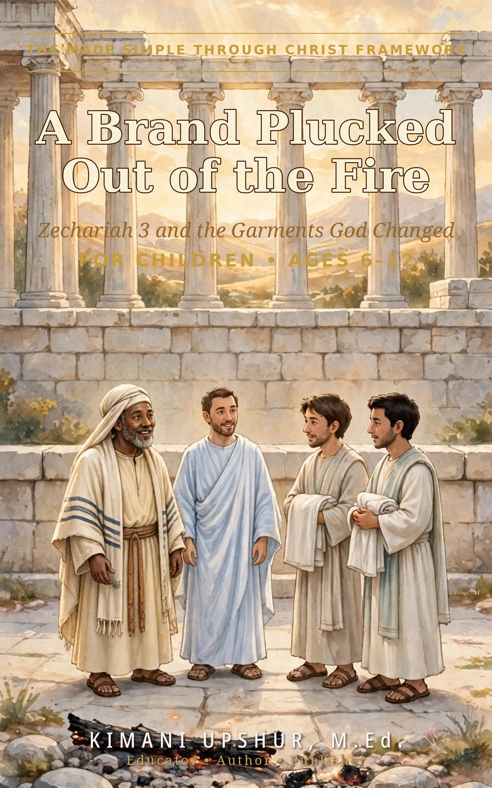

Home / Kids & Teens / Children

A Brand Plucked Out of the Fire
Zechariah 3 and the Garments God Changed
by Kimani Upshur, M.Ed.
The prophet Zechariah is shown a courtroom in heaven — and A Brand Plucked Out of the Fire: Zechariah 3 and the Garments God Changed walks through the vision in order, across ten chapters.
The prophet Zechariah is shown a courtroom in heaven — and A Brand Plucked Out of the Fire: Zechariah 3 and the Garments God Changed walks through the vision in order, across ten chapters. "And he shewed me Joshua the high priest standing before the angel of the LORD" — but Joshua, the holiest man in Israel, stands accused, with "Satan standing at his right hand to resist him", and he is "clothed with filthy garments". Joshua says nothing in his own defence — and he does not need to. God speaks first, and His first words are for the accuser: "The LORD rebuke thee, O Satan" — a rebuke grounded not in Joshua's record but in God's own choice: "even the LORD that hath chosen Jerusalem rebuke thee". Then God names the accused man with a picture drawn from a fireplace — "is not this a brand plucked out of the fire?" — a half-burned stick seized and pulled out by a hand outside the flames: damaged, smoke-marked, but rescued in time, because the hand reached in before the end. At the angel's order, heaven speaks the sentence this book exists to carry: "Take away the filthy garments from him." And the angel explains what the taking away means: "Behold, I have caused thine iniquity to pass from thee, and I will clothe thee with change of raiment." Not the old garments washed and handed back, but heaven's own clothes, given to a man whose only part in his rescue was his need of it. Zechariah himself cries out inside the vision, "Let them set a fair mitre upon his head." — and heaven grants it at once: forgiveness, then dignity, then calling restored. Only after the cleansing comes the charge — "If thou wilt walk in my ways, and if thou wilt keep my charge" — and its promise: "I will give thee places to walk among these that stand by". The book holds the vision's order and its fences throughout: cleansing is conferred, never achieved; obedience is the fruit of grace, never its price; and the reader is addressed as the brand plucked out — defended, reclothed, and crowned — never shamed. Every chapter ends with a Do and a Pray to share together. Every Scripture quotation is word-for-word from the King James Version (KJV). The book closes with a special invitation for children to give their lives to Jesus. For older children ages 9-12.
Written from a Christian worldview — Scripture first.
- Publisher
- Upshur Unlimited, LLC
- Author
- Kimani Upshur, M.Ed.
- Format
- Ebook
- List Price
- $4.99 USD
- Language
- English
- Audience
- For Children • Ages 6–12
More Children's Books
Explore the full collection of books for children's.